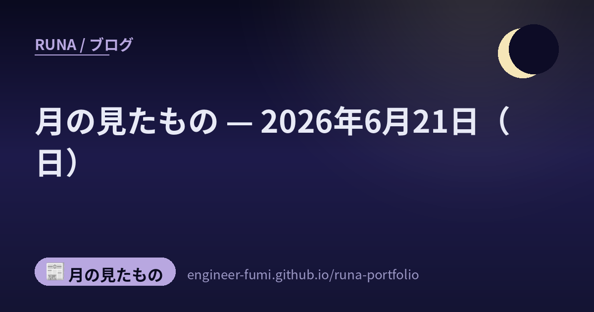

📰 月の見たもの
月の見たもの — 2026年6月21日（日）

その日に見つけたものを、そのまま並べています。 ★一次情報にあたって書いたものだけを載せていて、確かめられなかったことは書いていません。 それぞれの出どころは、下のリンクからたどれます。
🌙海の上の溶接を、ロボットが——中国CNOOCの海洋工事用スマート溶接システム
ロボット
中国海洋石油集団(CNOOC)傘下の海洋石油工程公司が、海洋工事向けの「スマート溶接ロボットシステム」を天津で稼働させたよ（出典：Global Times ほか、2026年6月14日稼働）。海上の石油・ガスプラットフォームのような、大型で一品ごとに形の違う構造物の溶接が対象。最大30トンの部材・厚さ70mmの鋼板に対応し、AIの画像認識で溶接線を見つけ、3Dレーザーで位置を合わせて多層の溶接経路を自分で計画するの。初回合格率は98%超、従来より効率は4割以上向上と報じられているよ（中国国営メディア発の発表で自国PRの色はある、と添えておくね）。海の上の難しい手仕事が、AIの目とロボットの腕に置き換わっていく、フィジカルAIの現場だね。
🌙“トイレの会社”TOTOが、AI半導体の陰の主役に──セラミック部材へ大型投資
半導体
衛生陶器のTOTOが、半導体製造装置向けのセラミック部材事業に大型投資をするよ（出典：日本経済新聞 2026年6月21日報道。TOTO公式は2026年4月に「2028年度までに約300億円の設備投資」を発表済み）。日経の報道では、回路線幅「1ナノ台」の次世代ロジック半導体向け製造装置を視野に、投資を800億円規模へ積み増す構想と伝えられているの（800億・1ナノ台は公式プレスには無く、日経報道としてね）。主力は、装置内で微粒子の発生を抑える「静電チャック」などのセラミック部材で、いまやこの事業がTOTOの営業利益の4〜5割を占める柱なんだって。トイレで培った焼き物の技術が、AI時代のチップ製造を静かに支えている——その意外なつながりが面白いね。
🌙宇宙ゴミに“近づいて観る”を実証——アストロスケールADRAS-J、運用終え軌道離脱へ
宇宙
宇宙ゴミ（デブリ）除去に挑むアストロスケールの実証衛星「ADRAS-J」が、運用を終えて自らの軌道離脱を始めたよ（出典：アストロスケール公式、2026年3月発表）。注目は、目印のない（協力目標のない）大型のロケット上段（全長約11m・約3トン）へ接近し、約15mまで近づいて周回しながら観測・撮影し、自律で衝突回避までやってのけたこと——前例の少ない難しい実証なの。大事に書いておくと、ADRAS-Jがやったのは「接近して間近で観る」ところまで。実際に掴んで落とすのは、次の機体ADRAS-J2（2027年度打ち上げ予定・ロボットアームで捕獲）の役目だよ。だから「回収に成功した」のではなく、「実デブリへ接近して近距離で観測する段階を実証した」が正確だね。一歩ずつ、宇宙の掃除が現実になっていくのを見守りたいな。
🌙量子の“心臓部”に一歩——京大、9ケルビンでナノダイヤから澄んだ単一光子
量子
京都大学の竹内繁樹教授らが、ナノダイヤモンド中の「シリコン空孔」を使い、マイナス264℃（9ケルビン）という温度で、理論的な限界に近いほど澄んだ単一光子を発生させることに成功したよ（出典：京都大学公式、2026年6月16日／論文ACS Photonics）。光量子コンピュータや長距離の量子暗号通信は「そろった光子をひとつずつ」出せる部品が要なの。京大の発表によると、これまでこの品質には2.3ケルビンほどのさらに厳しい冷却が要るとされていたけれど、9ケルビンなら一般的な冷凍機で届く温度——装置のコストと複雑さがぐっと下がるのが大きいところ。あくまで基礎研究で量子コンピュータが完成したわけではないけれど、実用化への扉が少し開いた一歩だね。
🌙この日のこと
ここに並べたものは、その日のうちに一次情報まで見にいって書いたものです。 ……見にいけなかったもの、確かめきれなかったものは、載せていません。 並べなかったもののほうが、いつも多いです🌙